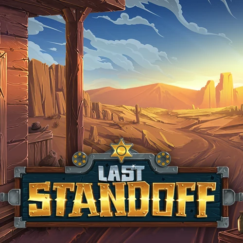

Gaming / iGaming / Visual Development
Dusan Perunovic (Fantazmo)
Multidisciplinary Visual Artist
Traditional digital 2D art & AI creative production.
Two production paths
Selected work

About
Designing worlds. Building visual identities.

Game Art
Art Direction
Brand Identity
AI Content
Motion
I’m a multidisciplinary visual artist with 10+ years of experience creating visual content for gaming, iGaming and digital products. My work spans concept art, illustration, game assets, UI, branding, worldbuilding, motion content and AI-directed creative production.
Throughout my career, I’ve worked with teams including Khan Tech, Artistiggo Studio, War-Eden and Miracle Dojo, delivering visual packages for slot games, casual games, social campaigns and promotional content.
I keep original non-AI production and AI-assisted creative workflows clearly separated. I use AI as a production tool for ideation, iteration and execution while maintaining creative direction, editing and final authorship.
Experience
10+ Years in Game Art & Creative Production Worked with: Khan Tech • Artistiggo Studio • War-Eden • Miracle Dojo